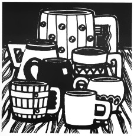

Sonbahar Solace'ı neşeli renklere bürümüştü. Her veranda, her pencere kırmızı, turuncu ve sarı çiçeklerle bezenmişti. Solace'daki dükkanlar ve evler yosunlu toprağın üzerindeki vallen ağaçlarının kalın dalları arasına yerleştirilmişti. Bu orman kentinde meydanlar bulunuyordu. Bu meydanlarda her hafta ya bir pazar, ya da bir panayır kurulurdu.
Bu parlak öğleden sonrada üç kişi, iki adam ve bir kadın, güneşle aydınlatılmış meydanda duruyordu. İki kılıç bir öne bir arkaya gidip geliyor, güneş ışığı üzerlerine vurduğunda adeta alev saçıyorlardı. İki figür temkinli hareketlerle birbirinin çevresinde dönüyor, yalın kılıçlarıyla ani saldırı başlatacaklarmış gibi hareketler yapıyorlardı. Üçüncü bir figür geride durmuş izliyordu. Güçlendirilmiş çeliğin birbirine çarpışıyla iki kılıç buluşmuştu.
"İyi karşılama!" dedi seyirci Caramon Majere. "Çok güzel bir savuşturma, Sturm!"
Kahverengi bıyıkları aşağı sarkan uzun boylu genç adam mırıldanarak teşekkür etti. Oldukça meşguldü. Rakibi öne fırladı, göğsüne doğru bir hamle yaptı. Sturm Brightblade gelen hamleyi bloke etti ve pozisyonunu koruyarak geriye çekildi. Darbeden kıl payı kurtulmuştu.
Sturm'ün düşmanı dengesini kaybederek sallandı. Bacakları birbirinden epey ayrılmıştı.
"Sakin ol, Kit!" diye seslendi Caramon. Üvey kız kardeşi bir dansçının zarafetiyle toparlandı. Deri çizmeli ayaklarının topuklarını birleştirdi ve Sturm'ü bir hedef olarak kabul etti.
"Şimdi, dostum," dedi. "Sana para için dövüşmek sayesinde edindiğim beceriyi göstereceğim."
Kitiara kılıcının ucuyla havada küçük daireler çizdi. Sturm bu ölümcül hareketleri izlerken, Caramon da ağzı açık bir şekilde seyrediyordu. On sekiz yaşında olmasına rağmen yetişkin bir erkek görünümündeydi, ama içinde hâlâ küçük bir çocuk vardı. Vahşi ve pişkin Kitiara onun idolüydü. Kitiara alelade on adamdan daha cesur ve atılgandı.
Caramon olduğu yerden Kitiara'nın kılıcının ucundan çıkan her çentiği görebiliyordu. Kılıç sık ve ustaca cilalanmaktan dolayı parlıyordu. Buna karşılık Sturm'ün kılıcı o kadar yeniydi ki, kabzası hâlâ demircideki alevin mavisini üzerinde barındırıyordu.
"Sağına dikkat et," dedi Caramon. Sturm boştaki eliyle uzun eyer kaşının üzerini kapattı ve tıpkı bir Solamniya Şövalyesi gibi Kitiara'nın hamlesini bekledi.
"Hai!" Kitiara tek bacağı üzerinde döndü ve kılıcıyla havayı boylamasına kesti. Kitiara pozisyon alırken, Caramon nefesini zor tutuyordu. Sturm kımıldamadan bekledi, Kitiara'nın kılıcı açısını korursa yolu Sturm'ün boynunda son bulacaktı. Caramon gözlerini kapattı ve sert bir çelik sesi duydu. Kendini aptal gibi hissederek gözlerini tekrar açtı.
Sturm hiçbir kurnazlığa başvurmadan hamleyi savuşturdu. O ve Kitiara kılıçlarının uçları birbirlerine kilitlenmiş bir şekilde durdular. Kitiara'nın bileği titredi. İleri bir adım attı ve kılıcını tuttuğu kolunu boşta kalan eliyle destekledi. Sturm bu kez onun gardını zorladı. Kitiara'nın yüzü solgunlaştı, sonra kıpkırmızı kesildi. Caramon bu bakışı biliyordu. Bu dostane karşılaşma Kitiara'nın hoşlanmadığı bir şekle bürünüyor ve onu sinirlendirmeye başlıyordu.
Öfkelenen Kitiara mecburen pozisyonunu değiştirdi ve Sturm'ün iri cüssesi ve gücü karşısında inledi. Kılıcının kabzası düştü. Sturm'ün yeni kılıcının düğmeli sapı Kitiara'nın çenesine sürtündü.
Kitiara soluk soluğa kalarak bu mücadeleyi bitirdi. İki kılıç da yeşil çimlere saplandı.
"Yeter," dedi kız, "Birayı ben alacağım. Beni bu şekilde savuşturacağını bilmeliydim! Haydi, Sturm, Otik'in ürettiği en iyi içkiden birer maşrapa içelim."
"Kulağa hoş geliyor," diye karşılık verdi Sturm. Kılıcını bıraktı ve geriye doğru bir adım attı, zor nefes alıyordu. Tam hareket ettiğinde Kitiara kılıcını Sturm'ün ayak bilekleri arasına sapladı. Sturm'ün ayakları dolaştı ve sırtüstü çimenlerin üzerine düştü. Kılıcının elinden fırlamasından bir saniye sonra, Kitiara kılıcını onun boğazının üzerinde tutarak tepesinde duruyordu.
"Dövüş her zaman bir spor değildir," dedi Kitiara. "Gözlerini dört aç ve kılıcını elinde sıkıca tut dostum, bu şekilde daha uzun yaşarsın."
Sturm kılıcın üzerinden Kitiara'nın yüzüne baktı. Teri kara buklelerini yüzüne yapıştırmıştı ve koyu renk dudakları da sertçe birbirlerine kenetlenmişti. Dudakları yavaşça aralanıp orantısız bir gülümseme ortaya çıkarttı. Silahını kınına koydu.
"Bu kadar mahzun bakma! Bir dostun seni yere yıkması, bir düşmanın seni devirmesinden daha iyi bir derstir." Kitiara elini uzattı. "Flint ve Tanis, Otik'in bütün birasını bitirmeden gitsek iyi olacak."
Sturm, Kitiara'nın elini yakaladı. Eli sıcaktı, ancak uzun eldivenlerden ve kılıç saplarından dolayı duyarsızdı. Kitiara, Sturm'la burun buruna gelene kadar onu yerden kaldırdı. Bir baş boyu daha uzun ve yaklaşık yirmi kilo daha ağır olsa da, Sturm hâlâ Kitiara'nın yanında kendini acemi bir genç gibi hissediyordu. Ama Kitiara'nın parlak gözleri ve alımlı gülümseyişi endişesini kovuyordu.
"Bir dövüşçü olarak nasıl başarılı olduğunu şimdi anlıyorum," dedi Sturm ve kılıcını almak için öne doğru eğildi. Kılıcını kılıfına koydu. "Ders için sağol. Bir dahaki sefere ayaklarımı birbirinden daha ayrı tutacağım!"
"Daha sonra bana hareketlerinden bazılarını öğretir misin Kitiara?" diye sordu Caramon hevesle. Caramon maceraperest kız kardeşinin verdiği küçük bir kılıç taşıyordu. Kitiara onu katıldığı birçok savaş alanının birinden almıştı. Çok az sayıda kişiye nasip olan maden işçiliğini bilen Flint Fireforge. Caramon'un kılıcının güney Qualinesti'de yapılmış olduğunu söylemişti. Sadece bunun gibi ipuçlarıyla arkadaşları maceralarının Kitiara'yı nerelere götürdüğünü biliyorlardı.
"Neden olmasın? Dövüşün adil olmasını sağlamak için tek elimi arkaya bağlarım." Caramon sert bir yanıt vermek için ağzını açtı, ama Kitiara onun dudaklarını eliyle kapadı. "Şimdi hana gidelim. Eğer bir an evvel bira içmezsem perişan olacağım."
* * * * *
Son Yuva Hanı'nı destekleyen büyük vallen ağacına vardıklarında, arkadaşları Flint'i rampanın altında otururken buldular. Cüce, büyük yumru ellerine batmış olan çalı çırpıları bir bıçakla kazıyordu.
"Hmm, tek parça halinde gelmişsin," dedi Flint, Sturm'e bakarak. "Ne yalan söyleyeyim, başını kolunun altında taşıyarak geleceğini düşünmedim değil."
"Bana olan güvenin muazzam," diye karşılık verdi genç adam yüzünü ekşiterek. Kitiara durdu ve kolunu Caramon'un geniş omuzlarına doladı.
"Kendine dikkat et, yaşlı cüce. Ustamız Sturm'ün eşine zor rastlanan güçlü bir kolu var. Çağ dışı şövalyelik kurallarına bağlı kalmamayı öğrendiğinde–"
"Onur hiçbir zaman çağ dışı değildir," dedi Sturm.
"Seni kılıcım çenene dayalıyken sırtüstü yere indirdim. Eğer sen–"
"Başlama!" diye bağırdı Caramon. "Eğer onur üzerine bir atışma daha duyarsam sıkıntıdan ölebilirim!"
"Tartışmayacağım," dedi Kitiara, kardeşinin kıçını tokatlayarak.
"Bizimle gel, Flint, Kitiara ısmarlıyor," dedi Caramon. Yaşlı cüce bodur ayaklarının üzerine kalktı, kucağından aşağı beyaz ağaç kıymıkları döküldü. Kıyafetlerini düzeltti ve bıçağını tozluklarının arasına soktu.
"Sana bira yok," dedi Kitiara, Caramon'a annelere özgü bir sertlikle. "İçmek için yeterince büyük değilsin."
Caramon, Kitiara'nın kolunun altından kurtuldu ve Sturm'e doğru koşarak, "Artık on sekiz yaşındayım, Kit," dedi.
Kitiara'nın yüzünde bir şaşkınlık ifadesi belirdi. "On sekiz mi? Emin misin?" Kitiara'nın 'küçük' kardeşi Sturm'dan yaklaşık üç santim daha uzundu.
Caramon ona nefretle baktı. "Tabii ki eminim. Sadece sen benim yetişkin bir erkek olduğumu farketmedin."
"Sen bir bebeksin!" diye bağırdı Kitiara, kılıcıyla eline vurmaya başladı. "Biraz daha konuşursan seni dizime yatırıp döverim!"
"Ha!" Caramon güldü. "Beni yakalayamazsın!" diyerek merdivenlerden hızla koşmaya başladı. Kitiara kılıcını yerine koydu ve onun arkasından fırladı. Caramon'un uzun bacakları dik basamakları hızla tırmandı. O ve kız kardeşi kahkahalar atarak ağaç gövdesinin içinde gözden kayboldular.
Flint ve Sturm daha yavaş adımlarla ilerlediler. Hafif bir esinti ağacın içinde hışırdadı ve renkli yaprakları basamakların üzerine döktü. Sturm diğer ağaç evlerdeki dallara baktı.
'Birkaç hafta içinde başka yerleri degörebileceğiz,' diye derin derin düşündü.
"Evet," dedi Flint. "Şimdi yolda olmamak çok garip. Ben senin yaşından daha fazla bir süreyi, her yılın ilkbahar-sonbahar aralığında Abanasinya'nın yollarında ticaret için katedip durdum, evlat."
Sturm başını salladı. Flint'in gezici maden işçiliğinden emekliye ayrılması hepsini şaşırtmıştı.
"Şimdi her şey geçmişte kaldı," dedi Flint. "Şimdi ayaklarımı uzatma zamanı, belki de gül yetiştiririm." Sturm yaşlı cücenin bahçeye gül dikmesini o kadar alışılmamış buldu ki, bu düşünceden kurtulmak için başını sallaması gerekti.
Hanın asıl mekanına girmek üzerelerken Sturm parmaklıkta durdu. Flint onu beklemeden birkaç adım daha attı. Sonra Sturm'e doğru bakarak, "Ne oldu, evlat? Bana bir şey söylemek üzereydin."
Flint hiçbir şeyi kaçırmamıştı.
"Ben gidiyorum," dedi Sturm. "Solamniya'ya. Gidip mirasımı arayacağım."
"Peki ya baban?"
"Eğer ondan kalan bir iz varsa, onu bulacağım."
"Bu uzun bir yolculuk ve tehlikeli bir arayış olabilir," dedi Flint. "Ama seninle gidebilmeyi isterdim."
"Boşver." Sturm parmaklıkların yanından yürümeye başladı. "Bu benim arayışım."
* * * * *
Sturm ve Flint hanın kapısına vardıklarında elma çöplerinden oluşmuş bir engelle karşılaştılar. Gözlerindeki yapışkan meyve parçalarını silmeye çalışırlarken oda kahkahalarla çınladı.
"Bunun sorumlusu olan haylaz kim?" diye gürledi Flint. On dörtten büyük olmayan, beceriksiz, kızıl kıvırcık saçlı bir genç kız cüceye bir havlu uzattı.
"Otik yeni bir elma şarabı yaptı, ve artıklardan kurtulmak zorundaydılar," dedi kız özür dileyen bir sesle.
Sturm yüzünü sildi. Kitiara ve Caramon barda oturmuş, deliler gibi kıkırdıyorlardı. Barın arkasında hanın sahibi olan Otik başını iki yana sallıyordu.
"Burası birinci sınıf bir han," dedi. "Eğer muzipliklerinize devam edecekseniz dışarı çıkın!"
"Saçmalık!" dedi Kitiara. Barın üzerine bir madeni para fırlattı. Caramon gülmekten dolayı yaşaran gözlerini sildi ve dik dik oraya baktı. Bu altın bir paraydı ve bunlardan çok az sayıda görmüştü.
"Bu senin sinirlerini yatıştırır, ha, Otik?" dedi Kitiara.
Uzun boylu, yakışıklı bir adam masasından kalktı ve bara yaklaştı. Hareketleri oldukça zarifti: çıkık elmacık kemikleri ve altın rengi gözleri elf soyundan olduğunu belli ediyordu. Adam parayı eline aldı.
"Sorun nedir, Tanis?" diye sordu Kitiara. "Daha önce hiç altın görmedin mi?"
"Bunun kadar büyük bir parayı görmedim," diye karşılık verdi bir yarımelf olan Tanis Yarımelf. Parayı döndürdü. "Nerede yapılmış?"
Kitiara maşrapasını bardan aldı ve içti. "Bilmiyorum," dedi. "Maaşımın bir parçası. Neden soruyorsun?"
"Üzerindeki yazı Elf dilinde. Bana kalsa Silvanesti'de basılmış olduğunu söylerdim."
Sturm ve Flint parayı incelemek için geldiler. Üzerindeki yazı Flint'e göre kesinlikle Elf dilindeydi. Bu paranın Anasalon'la tamamen ilişkisi kesilmiş olan Silvanesti'den çıkıp da nasıl bu kadar batıya gelebildiği büyük bir merak konusu olmuştu.
"Yağma," dedi odanın köşesinden bir ses.
"Ne dedin, Raist?" diye sordu Caramon. Hanın büyük odasındaki bir köşede soluk bir figür görünüyordu. Bu figür, Caramon'un ikiz kardeşi olan Raistlin'di. Her zamanki gibi tozlu tomarlarının arasında çalışıyordu. Ayağa kalktı ve topluluğun yanına yürüdü, hanın vitrayından içeri giren ışık solgun yüzünü hafifçe aydınlattı.
"Yağma," diye tekrar etti. "Hırsızlık, yağmacılık."
"Kelimenin ne anlama geldiğini biliyoruz," dedi Flint sertçe.
"Paranın Silvanesti'den çalındığını ve sonra Kit'in paralı asker yüzbaşısının kasasına girdiğini ima ediyor," dedi Tanis.
Parayı elden ele geçirdiler ve teker teker onu ellerinin içinde evirip çevirip ağırlığını bütünüyle hissettiler. Para maddi değerinden çok, uzak yerlerden, büyülü bir halktan bahsediyordu.
"Ben de bakayım," dedi barın altından gelen ısrarlı bir ses. Küçük, cılız bir kol Caramon ve Sturm'ün arasında belirdi.
"Hayır!" dedi Otik, parayı Tanis'in elinden alarak. "Ne zaman bir kender eline para alsa, o paraya bir elveda öpücüğü verebilirsiniz."
"Tas!" diye bağırdı Caramon. "Geldiğini görmedim."
"Bütün bu süre içinde odadaydı," dedi Tanis.
Tasslehoff Burrfoot da bütün ırkının bireyleri gibi akıllı ve küçüktü. En küçük yerlerde saklanabilirdi ve kendisinin 'meraklı' olarak adlandırdığı eli uzunlardandı.
"Herkese bira," dedi Kitiara, "şimdi kredim iyi." Otik dizili maşrapaları büyük bir sürahi ile doldurdu ve tüm dost grubu odanın ortasında bulunan büyük yuvarlak masanın yanına gittiler. Raistlin de beklenenin aksine tomarları başına dönmek yerine onlarla birlikte kaldı.
"Şimdi hepimiz buradayken," dedi Tanis. "biri bir şeyin şerefine kadeh kaldırmalı."
"İşte. Kit'in şerefine, ziyafeti verenin!" dedi Caramon, kilden yapılmış, elma şarabıyla dolu maşrapasını kaldırdı.
"Bunun için altını verenin şerefine," diye karşılık verdi kız kardeşi.
"Onu basan elflerin şerefine," diye önerdi Flint.
"Her koşulda elflerin şerefine içerim," dedi Kitiara. Maşrapasının üzerinden Tanis'e gülümsedi. Tanis'in zihninde bir soru oluştu, ama onu söyleyemeden önce Tasslehoff taburesinin üzerine çıktı ve diğerlerinin dikkatini üzerine çekmek için elini salladı.
"Ben Flint'e içelim derim," dedi Tas. "Bu onun Afet'ten beri yolda olmayışının birinci senesi."
Masada bir kahkaha koptu, ve yaşlı cücenin yüzü kızardı. "Seni hayvan yavrusu," diye gürledi. "Benim kaç yaşında olduğumu sanıyorsun?"
"O kadar fazla sayamaz," dedi Raistlin.
"Peki, yüz kırk üç yaşındayım, ve buradaki her adamı, her kadını ve her kenderi dövebilirim," dedi Flint. Masaya sert bir yumruk attı. "Denemek isteyen var mı?"
Hiç kimse gönüllü olmadı. Yaşına ve ufak tefekliğine rağmen Flint'in güçlü kasları vardı ve çok iyi bir dövüşçüydü.
Kadehlerini kaldırdılar ve neşe içinde öğleden akşama kadar içtiler. Çakırkeyif hallerini üzerlerinden atmak için Otik'in büyük akşam yemeklerinden biri ısmarlandı. Bir süre sonra masa yavru güvercinler, geyik eti, ekmek, peynir ve Otik'in ünlü kızarmış patateslerinden oluşan büyük tabaklarla dolmuştu.
Yemek yiyenlere kızıl saçlı kız servis yapıyordu. Caramon kemirdiği tavuk kemiklerini kızın önlüğünün cebine koydu. Kız da ona sıcak patateslerden birini omuzuna düşürerek karşılık verdi. Caramon sandalyesinden acı içinde kalktığında, kız da hızla Otik'in mutfağına kaçtı.
"Bu lanet olasıca da kim?" diye sordu Caramon, patatesi giysi kolundan çıkartmak için kıvranırken.
"Otik'in koruması altında," dedi Raistlin. "Adı Tika."
* * * * *
Gece ilerledi. Hanın diğer daimi müşterileri gelip gitti. Geç olduğunda Otik, Tika'ya dostlarının masasına mum yakıp koymasını söyledi. Akşamın erken saatlerindeki neşeli sohbet durgunlaşmış, yerini daha düşünceli bir sohbete bırakmıştı.
"Yarın gidiyorum," dedi Kitiara. Güneş yanığı yüzü mum ışığında altın rengine büründü. Tanis onun yüzünü inceledi ve eski sancıların geri geldiğini hissetti. Kitiara çok cazibeli bir kadındı.
"Nereye gidiyorsun?" dedi Caramon.
"Sanırım kuzeye," diye karşılık verdi Kitiara.
"Neden kuzeye?" diye sordu Tanis.
"Özel nedenlerim var," dedi Kitiara, ama gülümsemesi net yanıtını yumuşattı.
"Seninle gelebilir miyim?" dedi Caramon.
"Hayır, gelemezsin, kardeşim."
"Neden?"
Kitiara üvey erkek kardeşleri arasında oturuyordu, Raistlin'e baktı. Caramon'un bakışları Kitiara'dan ikiz kardeşine yöneldi.
Elbette ki, Raistlin'in ona ihtiyacı vardı. İkiz olmalarına karşı birbirlerine çok benzemiyorlardı. Caramon cana yakın genç bir ayıcıkken, Raistlin çalışkan bir hayaletti. Çok sık hastalanırdı ve cüsseli, kavgacı tipleri kendine düşman etmek gibi garip bir alışkanlığı vardı. İkizlerin doğumundan sonra anneleri eski gücüne hiçbir zaman ulaşamamıştı, bu yüzden Kitiara genç Raistlin'in sağlığı için uğraşıp durmuştu. Şimdi kardeşine göz kulak olma sırası Caramon'daydı.
"Ben de gidiyorum," dedi Sturm. "Kuzeye." Kitiara'ya baktı.
"Oo," dedi Tasslehoff. "Kuzey sıkıcı. Oradaydım. Şimdi gidilecek yer doğu. Doğuda görülecek çok şev var– şehirler, ormanlar, dağlar–"
"Delinecek cepler, 'ödünç alınacak' atlar," dedi Flint.
Kender alt dudağını kemirdi. "Eğer bir şeyleri bulmakta iyi isem bu benim suçum değil."
"Bir gün yanlış insanı bulacaksın, ve bunun için seni asacaklar."
"Kuzeye gitmem gerek," dedi Sturm. Öne doğru eğildi, elini çenesine koydu. "Solamniya'ya geri gidiyorum."
Herkes ona baktı. Sturm'ün ana vatanından sürgün ediliş hikayesini biliyorlardı. Solamniya sakinleri şövalye lordlara karşı ayaklandıklarından bu yana on iki sene geçmişti. Sturm ve annesi sadece hayatlarını kurtarabilmişlerdi. Şövalyeler hâlâ kendi ülkelerinde aşağılanıyorlardı.
"Sağ kolunu iyi kullanabilir misin?" diye sordu Kitiara. Sorusu herkesi hayrete düşürmüştü.
"Seni yolundan alıkoymak istemem," dedi Sturm, soruya farklı bir şekilde yaklaşarak.
"Kuzey kuzeydir. Doğuya, güneye ve batıya gittim."
"İyi o zaman. Senin yanımda olmaktan gurur duyarım."
Sturm yüzünü Kitiara'dan Tanis'e çevirdi. "Peki ya sen, Tan?"
Tanis tabağının içine iri bir ekmek parçası fırlattı. "Ben de kendi kendime bir yolculuk yapma konusunu düşünüyordum. Özel bir yer yok, sadece gitmediğim birkaç yere bir seyahat. Yolculuğumun beni kuzeye götüreceğini sanmıyorum." Kitiara'ya baktı, ama onun bakışları Sturm'ün üzerindeydi.
"Fikir bu," dedi Tasslehoff hevesle. Sağ eli kürk yeleğinin içine girdi ve düz, bakır bir diskle birlikte çıktı. Diski parmaklarının arasında dolandırdı. Bu parmaklarını çevik tutmak için arada sırada yaptığı bir egzersizdi. Ama bu pratiğe ihtiyacı yoktu. "Haydi doğuya gidelim. Tanis, sen ve ben."
"Hayır." Kısa cevap kenderin küçük elinin üzerindeki bakır diskin hareketini durdurdu. "Hayır," dedi Tanis bir kez daha, bu sefer daha kibardı. "Bu yalnız çıkmam gereken bir yolculuk."
Masa tekrar sessizdi. Sonra Caramon'dan gelen büyük bir hıçkırık masayı tekrar kahkahaya boğdu.
"Özür dilerim!" dedi Caramon, Kitiara'nın maşrapasına uzandı. Caramon'un eli maşrapaya uzanırken, Kitiara onun bileğine kaşığıyla vurdu. Caramon elini hızla geri çekerken. "Uff!" diye yakındı.
"Eğer bir daha denersen daha beteriyle karşılaşırsın," dedi Kitiara. Caramon sırıttı ve yumruğunu sıktı.
"Enerjini sakla, kardeşim," dedi Raistlin. "Ona ihtiyacın olacak."
"Nedenmiş o, Raistlin?"
"Hazır herkes yolculuk yapma kararı almışken, ben de benimkini açıklasam iyi olacak."
Flint güldü. "Sen yolda iki gün bile geçiremezsin."
"Muhtemelen geçiremem." Raistlin uzun parmaklarını büktü. "Eğer kardeşim benimle gelmezse."
"Nereye ve ne zaman?" diye sordu Caramon, bir yere gideceği için sevinmişti.
"Nereye olduğunu şimdi söyleyemem," dedi Raistlin. Soluk mavi gözleri neredeyse hiç dokunmadığı tabağına kilitlendi. "Uzun ve tehlikeli bir yolculuk olabilir."
Caramon ayağa zıpladı. "Ben hazırım."
"Otur aşağı," dedi Kitiara, kardeşinin yeleğini çekiştirdi. Caramon taburesinin üzerine oturdu.
Flint büyük bir of çekti. "Beni terk ediyorsunuz," dedi. "Bu mevsim tek bir teneke bile parlatmayacağım, ve bütün dostlarım kendi yollarına gidiyorlar." Tekrar içini çekti, üstelik o kadar güçlü çekti ki, mumların alevi titredi.
"Seni yaşlı ayı," dedi Kitiara. "Kendine acıyorsun. Solace'da tek başına kalmak zorundasın diye bir yasa yok. Yük olabileceğin akrabaların yok mu?"
"Evet," diyerek ekledi Tasslehoff, "gri sakallıyı ziyaret edebilirsin, yani gri saçlıyı demek istiyorum, yaşlı anneyi."
Cüce bu hakaret karşısında köpürdü. Flint'e yakın oturan Caramon ve Sturm kızgın cücenin yanından hızla uzaklaştılar. Flint maşrapasını sertçe masaya vurdu, biranın bir kısmı Tasslehoff'un yüzüne sıçradı. Kenderin burnundan bira damlıyordu ve birazı da kahverengi saçlarının topuzuna bulaşmıştı. Tasslehoff biranın gözlerine sıçrayan kısmını sildi.
"Hiçkimse benim annemle alay etmedi!" dedi Flint.
"Bir defadan fazla, her neyse," dedi Tanis ağırbaşlılıkla.
Tas da giysisinin koluyla yüzünü sildi. Kendi boş maşrapasını aldı ve onu gülünç bir miğfer gibi kolunun altına koydu. Saygınlığının azaldığını varsayarak, el kol hareketi yapmaya başladı ve, "Şimdi bir düello yapmalıyız," dedi.
Kitiara neşe içinde. "Senin yanında olacağım, Tas," dedi.
"Ben Flint'in tarafındayım!" diye bağırdı Caramon.
"Silahları kim seçiyor?" diye sordu Tanis.
"Flint'e meydan okundu, bu onun seçimi," dedi Sturm gülümseyerek.
"Ne olacak, yaşlı ayı? On adımda elma çöpleri mi? Kepçeler ve tencere kapakları mı?" diye sordu Kitiara.
"Bira maşrapaları dışındaki her şey," dedi Tas imalı bir şekilde, kendini beğenmiş duruşu her zamanki sırıtışıyla yer değiştirmişti. Gülüşü Tıka gelene kadar durmadı.
"Hiştt! Hişşt, geç oldu! Sessiz olur musunuz?" diye fısıldadı Tika.
"Biri seni tokatlamadan işine bak," dedi Caramon, Tika'ya dönüp bakmadan. Tika da Caramon'un taburesinin arkasına doğru geçerek ona kaba yüz hareketleri yapmaya başladığında, diğerleri ona güldü. Caramon şaşırmıştı.
"Bu kadar komik olan nedir?" diye sordu.
Tika, Caramon'un kemerinden hançeri marifetli bir şekilde çıkarttı. Hançeri başının üzerinde sanki Caramon'u sırtından bıçaklayacakmış gibi yüzünü buruşturarak kaldırdı. Gülmekten gözyaşları Kitiara'nın yüzünden akmaya başlamış, Tas da taburesine çökmüştü.
"Ne?" diye bağırdı Caramon. Sonra başını çevirdi ve Tika'yı görüp yüzünü ekşitti. "Aha!" dedikten sonra onu arkasından kovalamaya başladı. Kız yandaki masaların etrafından hızla dolandı. Caramon onun arkasından iskemleleri devirerek ve tabureler arasında tökezleyerek koşturuyordu.
Otik elinde bir lambayla mutfaktan çıktı. Gece kıyafeti çok salaştı ve seyrek beyaz saçları komik püsküller şeklinde duruyordu. "Bu şamata da ne? Kimse burada uyuyamayacak mı? Tika, neredesin kızım?" Kızıl saçlı kız bir masanın kasnağından etrafa bakıyordu. "Onları susturman gerekiyordu, partiye katılman değil."
"Bu adam beni kovalıyordu." O sırada mumla aydınlatılmış kalasları incelemekle meşgul olan Caramon'u işaret etti.
"Odana git." Tika pişmanlıkla orayı terk ederken Caramon'a son kez sırıttı ve dilini çıkarttı. Caramon ardından koşturmaya yeltenirken de hançerini ona fırlattı. Hançer Caramon'un sadece birkaç santim uzağında bir yere saplandı. Tika mutfağın sallanan kapıları arasında gözden kaybolmuştu.
Otik yumruklarını kalçalarının üzerine koydu. "Flint Fireforge! Senden bunu beklemezdim. Sen daha iyisini bilecek kadar yaşlısın. Ve sen, Usta Sturm; senin gibi terbiyeli bir yoldaş gece alemi yapmaktan çok daha iyi şeyler olduğunu bilmek zorundadır."
Flint oldukça mahcup gözüküyordu. Sturm ise sağ işaret parmağıyla uzun bıyığını düzeltti ve hiçbir şey söylemedi.
"Geri kafalı bir yaşlıymış gibi bakma," dedi Kitiara. "Tika çok eğlenceliydi. Ayrıca, bu bir veda partisi."
"Karınlarında dört varil bira olan herkes için her şey eğlencelidir," diye gürledi Otik. "Kim gidiyor?"
"Hmm, herkes."
Otik mutfağa geri döndü. "Tamam, ama tanrılar aşkına sessiz gidin!" dedi ve gözden kayboldu.
Caramon masaya döndü. Esnedi ve, "Bu Tika, Solace'daki en çirkin kız. Yaşlı Otik'in onu evlendirmesi için büyük bir çeyiz hazırlaması gerekecek!"
"Hiç bilemezsin," dedi Raistlin mutfağa doğru bakarak. "İnsanlar değişir."
* * * * *
Ayrılma zamanı gelmişti. Daha fazla oyalanmak için ortada bir neden yoktu. Bunu sezen Tanis birbirine kenetlenmiş elleriyle ayağa kalktı ve "Biz dostlar ayrılsak da, iyi dileklerimiz zamanla ya da mesafeyle küçülemez. Ama kalplerimizdeki daireyi daim tutmak için tekrar bir araya gelmeliyiz, her yıl bu günde, bu handa."
"Peki ya gelemezsek?" diye sordu Sturm.
"O zaman beş yıl sonra, bu gece burada bulunan herkes Son Yuva Hanı'na gelecek. Ne olduğu önemli değil. Bunu kutsal bir ant olarak kabul edelim. Bu andı benimle kim içiyor?"
Kitiara taburesini arkaya itti ve sağ elini masanın ortasına koydu. "Bu andı içerim," dedi. Gözleri sımsıkı Tanıs'in üzerinde kilitlenmişti. "Beş yıl."
Tanis elini Kitiara'nın elinin üzerine koydu. "Beş yıl."
"Onurum üzerine ve Brightblade hanesinin adına," dedi Sturm ağırbaşlılıkla, "Beş sene sonra dönmeye ant içiyorum." Kılıç kullandığı elini Tanis'in elinin üzerine koydu.
"Ben de," dedi Caramon. Geniş avucu Sturm'ün elini tamamen kaplamış, görüntüden silmişti.
"Eğer yaşıyorsam burada olacağım," dedi Raistlin, sesinde onda az rastlanır bir hareketlilik vardı. Zarif elini kardeşinin elinin üzerine koydu.
"Ve ben de! Burada hepinizi bekliyor olacağım!" Bunu söylerken Tasslehoff masanın üzerine çıkmış ve küçük elini Raistlin'in elinin yanına koymuştu, ikisinin elleri de Caramon'un geniş elinin üzerinde kaybolmuştu.
"Bir sürü saçmalık," diye homurdandı Flint. "Beş yıl sonra ne yapacağımı şimdiden nasıl bileyim? Bir handa oturup birkaç keratayı beklemekten çok daha önemli bir işim olabilir."
"Haydi, Flint. Hepimiz ant içiyoruz," dedi kender.
"Hmm." Yaşlı cüce eğildi ve yaşlı ve çalışmaktan yıpranmış ellerini diğerlerinin elleri arasına uzattı. "Tekrar buluşana kadar Reorx sizinle olsun," dedi. Cücenin sesi titrediğinde arkadaşları onun çok duygulandığını anlamışlardı.
Flint'i masada yalnız bıraktılar. İkizler gitmişti. Tanis, Kitiara ve Sturm merdivenlere yöneldi. Tasslehoff da onlara katılmıştı.
"İyi geceler diyeceğim," dedi Sturm, Tanis'e bakarak.
"Elveda değil." El sıkıştılar. "Kit, atım nalbantta bağlı. Benimle orada buluşur musun?"
"Tamamdır. Benim atım da orada. Yarın güneş doğarken?" Sturm başını salladı ve etrafa bakınarak Tas'ı aradı.
"Tas?" diye seslendi. "Nereye gitti? Ona hoşçakal demek istiyordum."
Tanis yukarıyı işaret etti. "Sanırım o da çıktı." Sturm başını salladı ve serin gecenin içine ilerlemeye başladı. Tanis ve Kitiara da büyük ağaçlarda şarkı söyleyen cırcır böcekleri eşliğinde oradan ayrıldı.
"Benimle yürür müsün?" diye sordu Tanis.
"İstediğin yere," diye cevap verdi Kitiara.
Yaklaşık on adım attıktan sonra Kitiara. Tanis'in koluna girdi. "Bir fikrim var," dedi Kitiara kurnazca.
"Nedir?"
"Bu gece benimle kalmalısın. Birbirimizi tekrar görene kadar aradan beş yıl geçebilir."
Tanis durdu ve kolunu Kitiara'nınkinden çekti. "Kalamam," dedi.
"Ah, peki neden? Benden bir dakika bile ayrı kalamadığın zamanlar çok geride kalmadı."
"Evet, senin uzakta geçirdiğin ve sana para ödeyen herkese eşlik ettiğin vakitlerden arta kalan zamanlarda."
Kitiara çenesini kaldırdı. "Yaptığım şeyden utanmıyorum."
"Utanmanı beklemiyorum. Konu şu, gittikçe seninle benim çok farklı dünyalara ait olduğumuzu farkettim, Kit. Hiçbir zaman uzlaşamayacak dünyalara."
"Sen ne diyorsun?"
"Sen gittiğinde doğum günüm oldu. Kaç yaşında olduğumu biliyor musun? Doksan yedi. Doksan yedi yaşında, Kit! Eğer bir insan olsaydım, her tarafı buruşmuş bir yaşlı olurdum. Ya da ölü."
Kitiara, Tanis'in ince yapısına dikkatle baktı. "Sen ne buruşuksun, ne de yaşlı."
"Sorun da bu! Damarlarımdaki elf kanı beni insan hayatından çok daha uzun yaşatıyor." Tanis ileriye doğru birkaç adım attı ve Kitiara'nın ellerini tuttu. "Bu sırada sen yaşlanıp öleceksin, Kit!"
Kitiara bir kahkaha attı. "Bırak da bunun için ben endişeleneyim!"
"Endişelenmeyeceksin. Seni tanıyorum, Kit. Gençliğini bir fırtınanın içindeki mum gibi yakıyorsun. Sen önemsiz bir savaş lordu için savaşta öldürülebilecekken benim sensiz hayatıma devam ederken neler hissedeceğimi nasıl bilebilirsin? Bu sona ermeli, Kit. Bu gece. Burada ve şimdi."
Karanlık olmasına ve beyaz ay Solinari, vallen ağaçlarının kalın dalları arasına saklanmış olmasına rağmen Tanis, Kitiara'nın yüz ifadesinden incindiğini görmüştü. Bu ifade yüzündeydi, ama sadece bir an için. Sonra Kitiara ifadeyi yüzünden sildi ve kendini gülümsemeye zorladı.
"Belki de benim için de aynı şey geçerli," dedi. "Hiçbir zaman bağlı kalmayı sevmedim. Zavallı annem öyleydi, hiçbir zaman kendine ne yapacağını söyleyecek kocası olmadan hayatını sürdüremezdi. Bu benim tarzım değil. Ben babama çekmişim. Rüzgarın içinde yanıyorum, değil mi? Varsın olsun! Sana teşekkür etmeliyim, Tanthalus Yarımelf, gerçeğe ayna tuttuğun için–"
Tanis, Kitiara'nın uzun ve sıkıcı konuşmasını bir öpücükle kesti. Bu yanağa konan zarif, kardeşçe bir öpücüktü. Kitiara öfkeyle baktı.
"İstediğim bu değil, Kit!" dedi Tanis büyük bir üzüntüyle. "Bu, olması gereken şey."
Kitiara ona bir tokat attı. Bir savaşçı olduğu için Kitiara'nın tokadı hafif bir tokat değildi. Tanis sendeledi ve elini yüzüne koydu. Ağzının kenarında bir miktar kan belirdi.
"Sevimli jestlerini kendine sakla," diye bağırdı Kitiara öfkeyle. "Onları bir sonraki sevgiline sakla, tabi eğer bulursan! O kim olacak, Tanis? Safkan bir elf bakiresi mi? Ama hayır, elfler seni melez olduğun için hor görür. Kendine bir kız versiyonunu bulman gerek." Kitiara, Tanis'i yalnız bırakarak uzaklaştı. "Onu hiçbir zaman bulamayacaksın!" Kitiara karanlığın içinden bağırıyordu. "Hiçbir zaman."
Cırcır böcekleri Kitiara'nın bağırışlarıyla susmuştu. Daha sonra tekrar ötmeye başladılar. Ama şarkıları karanlığın içinde tek başına duran Tanis'e hiçbir huzur vermiyordu.